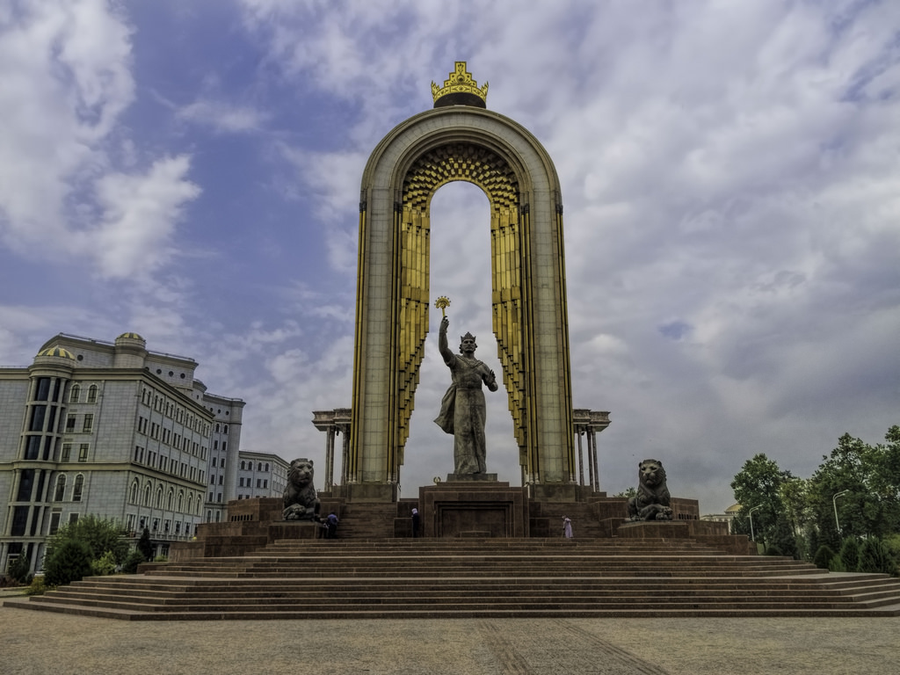
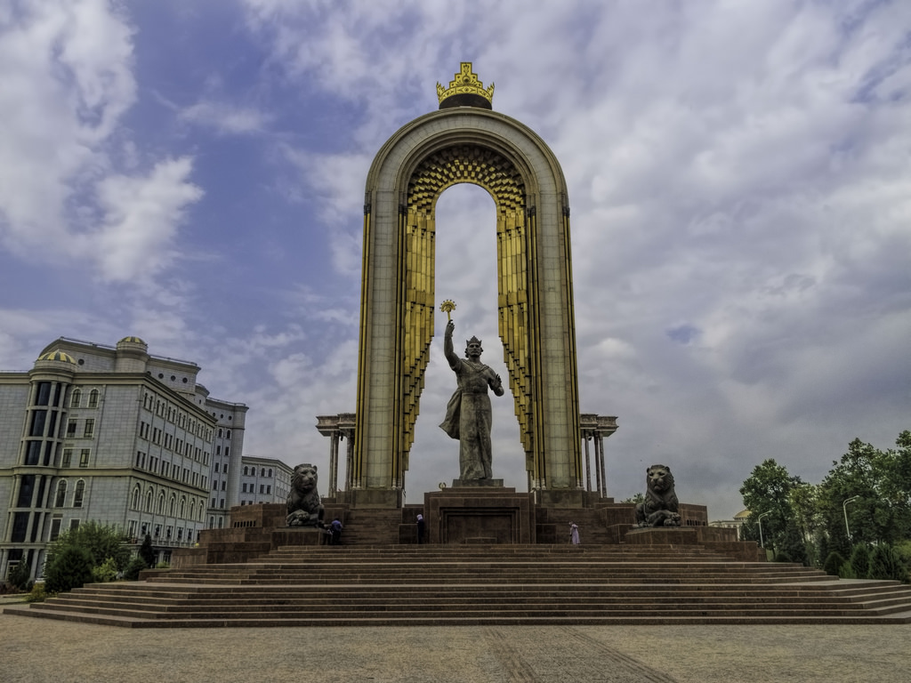

Dushanbe is the capital and largest city of Tajikistan. Dushanbe means Monday in the Tajik language, the local language. It was named this way because it grew from a village that originally had a popular market on Mondays. Historically a small village, Dushanbe was made the capital of the Tajik Autonomous Soviet Socialist Republic in 1924. Until 1929, the city was known in Russian as Dyushambe, and from 1929 to 1961 as Stalinabad which was named after Joseph Stalin.
 
